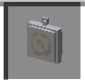
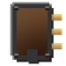

New Tardis Mod(新塔迪斯模组) 简单教程
——GFYGO
官方教程：TARDIS Mod
1 认识塔迪斯和英剧Doctor Who(DW)
1.1 Doctor Who 是BBC 在1963年11月23日首次播出至今的长寿科幻剧，比《新闻联播》还长。因为本剧有重生机制，所以61年间有15位演员担任”博士”角色。
一般的，时间领主只能重生12次。
1.2 塔迪斯是博士的座驾，是一个内部比外部大，可以穿梭在时间和空间中的时光机，有自我意识；在New Tardis Mod(NTM)中只能在空间和维度中穿梭。
2 物品简介
2.1 塔迪斯：不能创造获取，只能在y=60且只有两个空气方块的地方生成。
2.2 ARS平板电脑：在塔迪斯内生成或删除房间（无限）。
2.3 怀表：用于变成博士，获得或补充到12次重生。
2.4 铜制/铁制 量表：用于合成NTM中各种物品

2.5 中子光谱仪：解锁Tardis内饰。--->解锁控制室 解锁外观 解锁控制单元
3 塔迪斯
3.1 Tardis引擎：有4个面，不同的作用，在控制台下面
3.1.1 黄色面
3.1.1.1 电池↓(红色最好)
3.1.1.2 右侧是调谐物品的，将物品放入并驾驶Tardis。
：需要调谐的物品。
3.1.2 红色面
3.1.2.1 需放Artron↓(黄色最好)
3.1.3 蓝色面（需要用量表合成）【有点粗糙 但我尽力汉化了】{1个小时}
PS:可以用JEI模组看 跳转到 3.3 Tardis的驾驶
|
Name 名字 |
Type 类型 |
Uses 使用 |
Crafting Recipe 合成配方 |
Repair Recipe 修复配方 |
Damage 损伤 |
|
Dematerialisation
Circuit |
Essential 基本 |
|
|
|
1 Damage
every 5 to 10 seconds whilst in-flight. |
|
Fluid Link 流体链接 |
基本 |
需要启用加油按钮。 |
|
|
1 Damage
during takeoff and landing. |
|
Chameleon Circuit 变色龙电路 |
Optional 自选 |
Change the
exterior shell of the Tardis. |
|
|
1 Damage
per tick, chance to take 50% more. |
|
Interstitial Antenna 间隙天线 |
Optional 自选 |
Sending
and receiving messages. Receiving
distress calls. |
|
|
|
|
Temporal Grace时间恩典 |
Optional 自选 |
|
|
1 x Temporal Grace Circuit （损坏） |
1 Damage
every time damage is dealt while enabled. |
|
Shield Generator 盾牌发生器 |
Optional 自选 |
Protect
other subsystems when exterior is hit. Enabling forcefield. 启用 |
|
|
|
|
Nav Com 导航装置 |
Optional 自选 |
Displaying
current and destination co-ordinates. Setting
non-randomised destination co-ordinates. |
|
|
Does not take
passive damage, only takes active damage. |
|
Stabilizer 稳定器 |
Optional 自选 |
Allowing
the activation of stabilised mode. |
|
|
1 Damage
every 10 seconds whilst being used. |
上面【基本】的和稳定器必须装，最好装上 导航和稳定器。
装上后做连线游戏
3.1.4 绿色面
3.1.4.1 升级优化↓
|
Upgrade Name 升级名称 |
Features 特征 |
Crafting Recipe 合成配方 |
|
Blank Upgrade 空白升级 |
Allows for
crafting of other Upgrades. |
|
|
Atrium (Currently
Disabled) |
Allows the
Tardis to bring blocks with it when it (de)materialises. The area is in an 11
block range and must be marked out with Atrium blocks. |
|
|
Electrolytic Convertor 电解转换器 |
|
|
|
Key Fob 遥控钥匙 |
|
|
|
Structure Locator 结构定位器 |
|
|
|
Time Link 时间链接 |
|
|
|
Zero Room 零号房间 |
Cures poison
debuffs and heals all entities below their maximum health in the interior of
a Tardis. Takes 1 damage for each heart healed. Currently unable to be repaired. |
|

3.2 工具的制作
3.2.1 Artron电池 
电池在使用之前，必须使用 Artron 电池 充电。从 1.5 开始，它可以在 Artron Collector 的 Rift Chunk 中充电。它也可以通过将其放置在 Tardis 引擎的“充电面板”中来充电。如果 Artron 电池是创造模式类型，它可以通过右键点击该物品来充能。这将给它无限充能。
3.2.2 电容器

3.2.3 ARS平板电脑
对空气右键选择生成的结构，再对Tardis内的右键生成结构。 删除。
3.2.4 朱砂：它是通过用普通的镐采挖朱砂矿得到的。朱砂粉与水桶一起入蒸馏器中。一段时间后，可以通过在 Alembic 中放置玻璃瓶来获得水银瓶。
3.2.5 电路模板
（蒸馏器）
3.2.6 ：目前只能在 Dalek Ships 中作为战利品获得。
dalek（戴立克）
3.2.7 外电路板
3.2.8 声波螺丝刀（音速起子）
|
Name 名字 |
Ingredients 成分 |
Recipe 食谱 |
|
Sonic Screwdriver 声波螺丝刀 |
|
|
|
Sonic Emitter 声波发射器 |
|
|
|
Sonic Activator 索尼克激活器 |
|
|
|
Sonic Handle 声波手柄 |
|
|
|
Sonic End Cap Sonic End Cap（声波端盖） |
|
|

3.2.9 Tardis手册
3.3 Tardis的驾驶
3.3.1 认识驾驶类型和控件
3.3.1.1 驾驶类型：稳定驾驶需要开启稳定器，Tardis不喜欢但是很简单；不稳定驾驶不须要稳定器，与稳定飞行相比，它允许定时飞船以一半的燃料使用量飞行两倍，在飞行过程中，飞行员必须通过按下正确的控制装置来应对各种飞行危险，见Tardis 飞行（建议使用稳定飞行）
3.3.1.2 控件 以coral控制台为例。可以用3.2.9的手册看每个控件名字
3.3.1.3 ①油门：右键增加shit+右键减小，每次飞行完成后会自动归零（现在）
3.3.1.4 ②正门朝向：Tardis外部门的朝向。
3.3.1.5 ③随机发生器：随机坐标，与⑦有关。
3.3.1.6 ④稳定器：右键。
3.3.1.7 ⑤维度转换器：切换维度。
3.3.1.8 ⑥音速端口：调谐后（见3.1.1.2）的音速起子插 入的地方。
3.3.1.9 ⑦XYZ增量器：在绘制目的地时和使用③时每次
增加/限制增加 多少坐标。
3.3.1.10 ⑧通讯器：其他玩家发送的可以接收，自己发送的也可以；或遇到了任务时收到的。Nav-com加载指将目的地设为这个坐标。
3.3.1.11 ⑨手刹：图中状态是拉起，此时Tardis可以飞行；反之不能飞行。
3.3.1.12 ⑩垂直着陆类型：按钮可以切换以查找目的地最高或最低可用位置。这有助于您在不确定目的地坐标潜在风险时。例如，大瀑布。
3.3.1.13
⑪快速返回：右键，将
Tardis 目的地设为它上次着陆的位置。
3.3.1.14 ⑫加油机：加油。（:D）
3.3.1.15 ⑬从右到左是Z,Y,X 用于设置目的地，右键增加shit+右键减少。
3.3.1.16 ⑭门开关：不要开着门飞行！！！
3.3.1.17 ⑮心灵感应窗口：右键单击控件以打开 GUI。选择要搜索的对象。
3.3.1.18
驾驶！----------------------------------------------------------------
1.准备工作：确保油量充足并开启稳定器，设置一个安全的目的地，确保Tardis引擎配置完成，确保门是关着的，拉起手刹。
2.拉动油门但不要拉死，拉死会让子系统快速损耗；放下手刹，开始飞行，3.显示屏上航程为100%时也要待Tardis声音响完再出去。
恭喜
你已经学会修复Tardis并驾驶